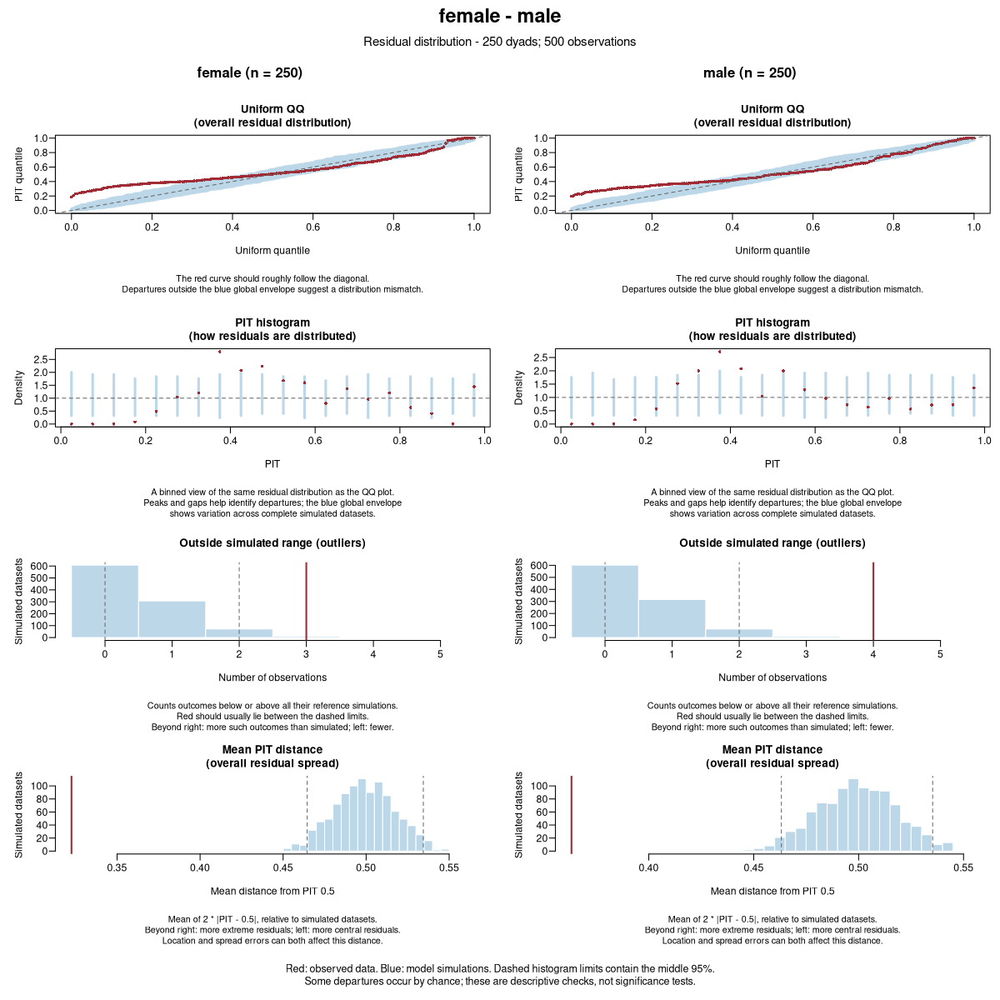
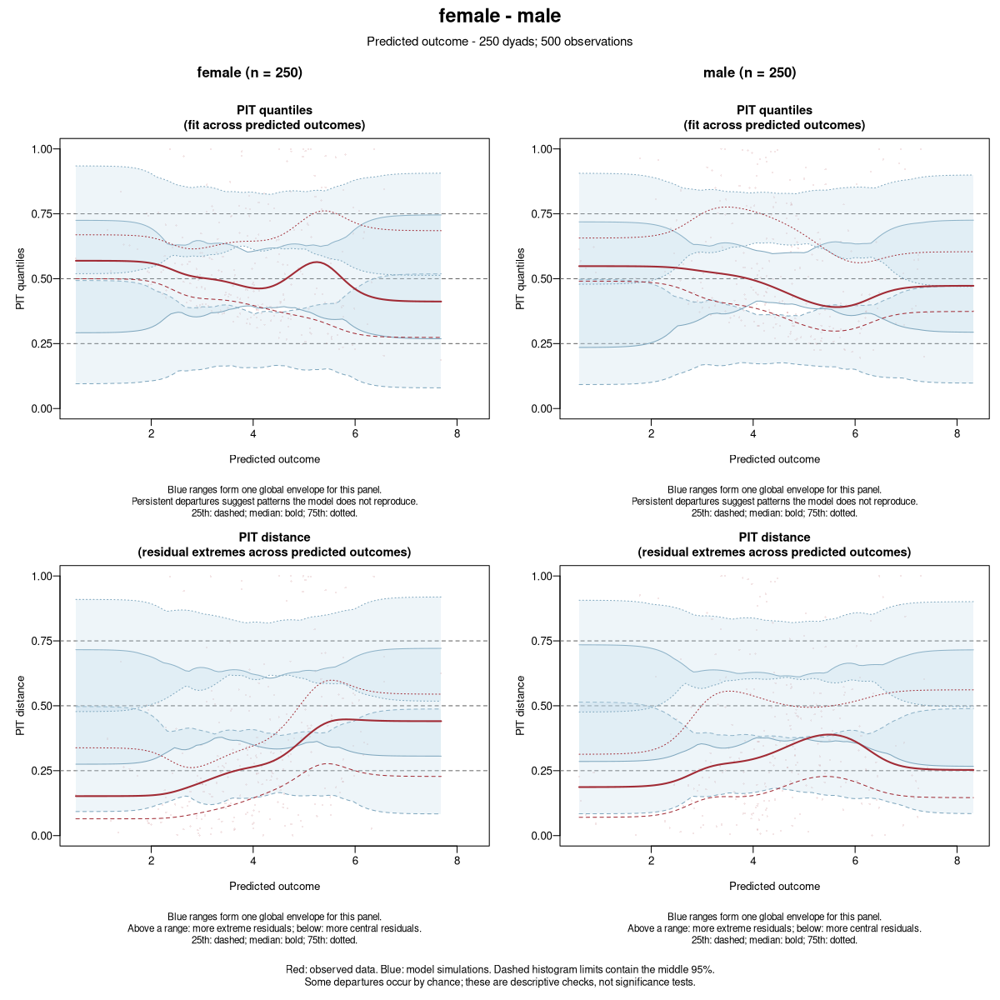
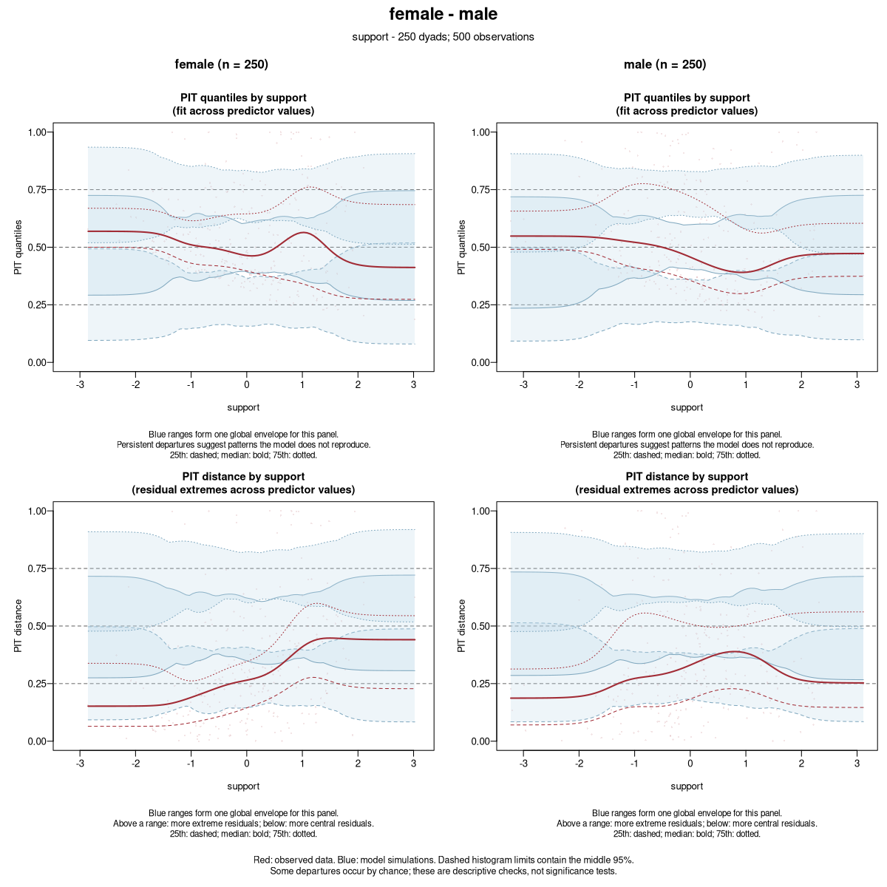
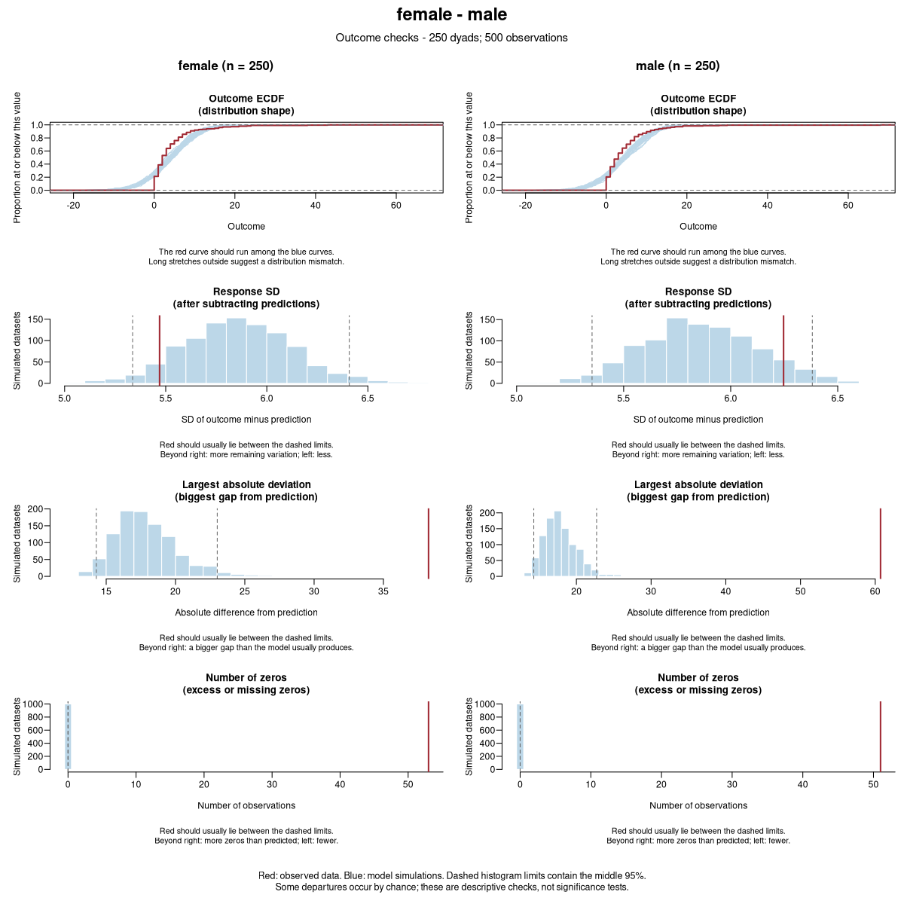
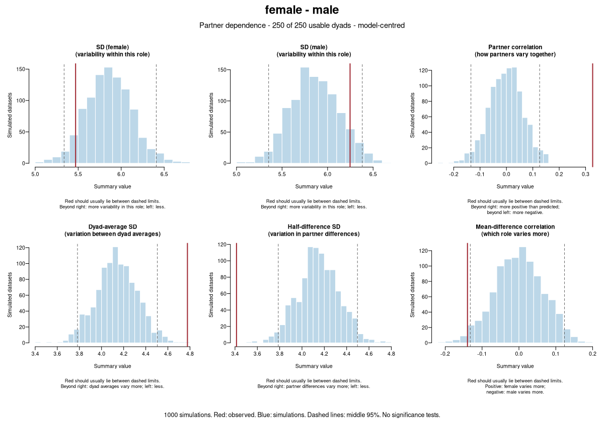

250 dyads. Outcomes follow a negative-binomial (NB2) model with a log link, role and support effects, and a shared dyad effect (SD 0.8). The NB2 size is 2.
We fit outcome ~ role + support with family = gaussian()
and no dyad effect. The model therefore misses both the outcome distribution
and partner dependence. All checks reuse 1,000 simulated datasets.
Red shows the observed data; blue shows model simulations. These are descriptive checks of one simulated example, not a detection study.




Observed model-centred partner correlation: 0.33. Simulated reference limits: -0.13 to 0.13.
